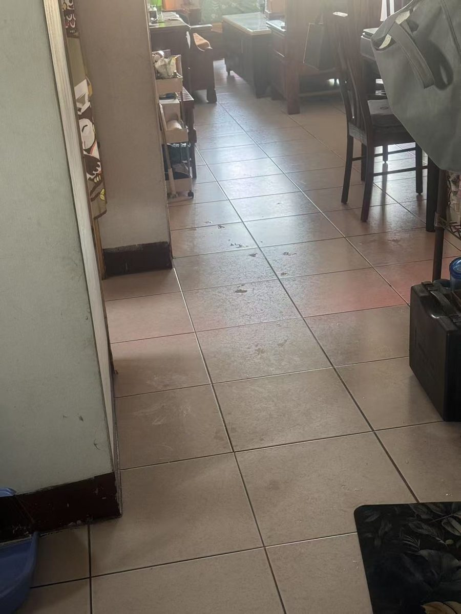

Luna 的離世溝通
冰箱裡的吉娃娃
一隻陪了主人 20 年的吉娃娃，溝通時說自己卡在一個陰暗狹小的角落，四周什麼都沒有，動不了，也不知道下一步要去哪。我問主人火化、超度做了嗎？主人當場崩潰大哭：她捨不得，把牠冰在家裡的冰箱，已經兩個多月了。主人的不捨，也會把牠留住。
你還想為牠做點什麼，這份心意牠收得到。
先慢慢看，不用急著決定。
超度，就是讓牠走得好。
剛離開的毛孩，像到了陌生的地方，不認得路，沒人來接就容易卡在原地。超度時，我們會請梅山的畜牧兵馬來接牠，也就是專門管動物的兵馬：狼犬在前開路、鸞鳥引魂，動物認得動物的樣子，所以牠不驚不怕，一路被護送到該去的地方安頓。
不會。
只要不是有意的傷害，小動物並不會計較，也不會怪你。不做超度也不是對不起牠：牠會照本來的流程走，對你也沒有影響。超度講的是緣，我們不會主動推薦；你想為牠做，請主動跟我們說。
有些會，溝通時看得到。
有的毛孩有執念走不掉；有的在外面停留太久、沒有及時轉世，受到外靈干擾。這種情況不多，但遇到了，通常超度都能解決。
Luna 的離世溝通
一隻陪了主人 20 年的吉娃娃，溝通時說自己卡在一個陰暗狹小的角落，四周什麼都沒有，動不了，也不知道下一步要去哪。我問主人火化、超度做了嗎？主人當場崩潰大哭：她捨不得，把牠冰在家裡的冰箱，已經兩個多月了。主人的不捨，也會把牠留住。
Luna 的離世溝通
一隻小狗離開四個多月後，主人來找我溝通。我看到牠還在家裡：太愛主人了，捨不得走。我把牠常待的位置描述給主人聽，主人說那一帶確實特別容易髒，在陽台抽菸時也總覺得有個小影子。主人當天就請我們替牠超度。
十多天後的一個早上，主人在家拍到一串小腳印，就在我描述牠待的那個角落。

主人在家拍到的小腳印（經主人同意刊登）
像這樣的狀況，就是超度能幫上忙的時候。要不要做，仍然由主人決定。
不用到場。給照片和資料、完成匯款，其他交給我們。
我們會擇日，由道長或我（Luna）在壇前行法。
我們看得到，也會交給你看。
傳統的超度只能做法事，沒辦法跟牠溝通。我們把溝通放進法事裡，所以能確認牠是不是真的被送走了。做完你會收到：法事過程的照片、轉世推算（下一世大概是什麼物種、多久之後轉世），道長也會在統一的時間替牠點一盞清潔平安燈。
不會。NT$5,000，含法事與轉世推算。
只有你想替牠多燒紙錢、供品，才照實際買的金額實報實銷。基本上不需要，但我們會照你的心意去做。
超度不只救度離開的牠，也替活著的你積福。功德是雙向的。
李誠卿道長的第一次動物超拔
小貓「開心」走後，主人夜夜睡不著。道長替牠超拔時，把溝通放進法事裡，讓小貓說了最後的話：牠惦記主人不愛吃飯，要她按時吃；提醒她腹部不舒服要去看；還說留了一根鬍子當禮物。主人後來說腸胃確實一直不舒服，也真的在房間找到那根鬍子。
道長當時也看到了牠下一世的樣子。後來主人真的找到了牠，這是很幸運的佳話，不是每一隻都會這樣，就隨緣吧。
可以。我們用的是專門給動物的法脈，不是拿人的法事來套（見最下面「關於我們」）。
可以，這是超度後的轉世推算。溝通時問到的只是「可能」，像填志願；超度之後的推算才是定案，像拿到蓋了章的錄取通知。但牠會投胎成什麼、會不會回到你身邊，沒辦法指定；轉世後也不會帶著記憶回來找你，這是規則。
那就晚一點超度。牠還有執念，我們先透過溝通幫牠化解。
也有的毛孩想先留在萬靈幡裡修行。你可以想成牠在我們這邊「打工」、賺一點零用錢：有的是想積攢功德福報，讓下一世轉得更好；有的是想拿這些功德福報報答主人的養育之恩，例如替主人帶來一筆偏財。這些都是我們在溝通裡遇過的。我們會定期跟牠確認，等牠準備好了，再定日子超度。
你為牠做的那些，心意都是真的，對牠也有幫助。我在溝通裡常遇到：主人還沒開口，我就看到毛孩在某位神明身邊修行，一問才知道家裡主祀的正是那一位。
差別在於，普度、葬儀社的法事多半是眾生一起做，像一鍋大鍋飯；我們是專門為「這一隻」做，是一個專席，你也可以想成替牠走一條 VIP 通道。別處做過、卻沒有真的送走的情況也有，我們可以透過溝通看看，之前做的在牠身上實際的效果。
可以。離世溝通 20 分鐘 NT$2,222，是另外的服務；超度 NT$5,000。可以一起約，也可以只做超度，照你的需要選。想先知道牠現在的狀態再決定，可以先約離世溝通。
想為牠做，請主動回到 LINE 跟我們說；想先問問也可以。匯款後我們就開始安排：先確認牠的狀態，再擇日行法。
行法的是金瀾言卿（李誠卿道長）和我（Luna）。我已經拿到這一脈的法脈傳承，目前能做這場法事的就是我們兩位。
我們的立場很清楚：動物的事，要用專門給動物的法脈來做。人有人的引魂幡，畜有畜的萬靈幡，不把人的法事硬套在毛孩身上。這是我們深入研究之後的選擇，也是我們跟別人不一樣的地方。我們用的是梅山的動物科儀；在台灣查得到的範圍裡，用這套科儀為一隻毛孩單獨做的，目前只有我們。
動物的身一直有人管，三千年的獸醫書都在治病；動物的魂，卻很少有人專門在管。
台灣大家熟悉的虎爺、保生大帝、地藏王菩薩，都是真實的信仰，各有職責：虎爺守的是平安、是生前；保生大帝的藥籤面對的是人；地藏王菩薩照顧的是所有眾生。普度、法會是眾生一起做；道教的超度文書要寫姓名、籍貫、生卒，是照著「人」設計的；台灣官方的拔度科儀清單，也沒有一條是給動物的。
梅山不一樣：祖師張五郎是獵神，獵人天天面對飛禽走獸，繞不開獸魂，所以梅山是歷史上唯一把動物的魂當成正式對象的法脈。梅山儺戲 2011 年列入中國國家級非物質文化遺產，湖南省博物館也藏有張五郎的玉像。
梅山當年沒有傳到台灣，所以你沒聽過很正常。我們花了很長的時間研究、求法，才把這一脈接下來。
我們堅持這樣做，是因為「對的法做對的事」。對毛孩，用的是專門管牠的那一套，管轄、對象、文書、兵馬都對得上，牠才接得穩、送得到。對行法的人，照著規矩在自己的轄區裡做，也才不會把自己和委託人置於風險。兩千年前《禮記》就寫過：「非其所祭而祭之，名曰淫祀。淫祀無福。」拿人的法事替動物做，心意再好，也是做錯了地方。
死亡不是結束，是一段新旅程的起點。
← 回到離世溝通說明